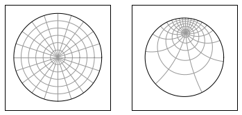
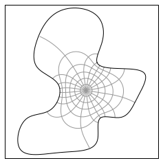
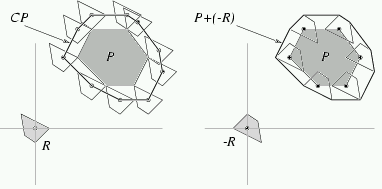

Not Invented Here
Porting Scientific Software to Python
Dr. Andrew Walker / @walkera101
What makes Scientific Software Different?
Completed Research
Autonomous Search for a Diffusive Source in an Unknown Structured Environment
B. Ristic, A. Skvortsov and A. Walker, Entropy 2014, 16, 789-813Trapping of diffusive particles by rough absorbing surfaces: Boundary smoothing approach
A. Skvortsov and A. Walker, Phys. Rev. E 90, 023202 – Published 15 August 2014Future Research


The Schwarz-Christoffel Toolbox, T. Driscoll, https://github.com/tobydriscoll/sc-toolbox
Conformal Mapping Toolkit, T. Driscoll, https://github.com/tobydriscoll/cmtoolkit
Porting Progress
- Week 1. ~30 files ported
- Week 2. ~5 files ported
- Week 3. 1 line ported
Not Invented Here Syndrome
Interoperability Alternatives
- ctypes
- subprocess
- CFFI
- cython
- f2py
- pyfort
- Reflex / cppyy
- pyrex
- SIP
- boost::python
- scipy.weave
- rpy
- rpy2
- SWIG
- ipython
- pymatlab
- pymatbridge
- smop
- pymex
- ompc
Integration

Two reasons to learn about Interoperability
Performance

Necessity
Python as Glue
“Python's strength is that it's like software superglue. It lets you build abstractions like they were Lego” -- Travis Oliphant
A whirlwind tour of interoperability tools
Subprocess
Interoperability via subprocesses
Graphviz Dot

digraph G {
a;
b;
c;
a -> b [ label="a to b" ];
b -> c [ label="another label"];
}Subprocess
from subprocess import *
def graphviz_dot(srcf, dstf, fmt='png'):
cmd = 'dot -T%(fmt)s %(srcf)s -o %(dstf)s'
cmd = cmd % locals()
subprocess.check_call(cmd.split())
When should you use subprocesses?
- If the tool you're interacting with has a CLI
- If performance isn't an issue
ctypes
A standard library module for calling C functions
Bessel functions
(Without scipy.special)
import ctypes
lib = ctypes.CDLL('/usr/lib/libm.dylib')
bessel_j0 = lib.j0
bessel_j0.argtypes = [ ctypes.c_double ]
bessel_j0.restype = ctypes.c_double
bessel_jn = lib.jn
bessel_jn.argtypes = [ ctypes.c_int, ctypes.c_double ]
bessel_jn.restype = ctypes.c_double
print bessel_j0(2.0)
print bessel_jn(3, 3.0)
Use ctypes if ...
- you want only want one or two functions
- you don't want to write c code
Avoid ctypes if ...
- you're doing anything complicated
scipy.weave
Take a string of C++ code and make it callable from Python
Transpose a 2 by 2 matrix
def transpose22(A):
code = '''
double a_10 = A2(1, 0);
double a_01 = A2(0, 1);
A2(1, 0) = a_01;
A2(0, 1) = a_10;'''
scipy.weave.inline(code = code,
arg_names = ['A'])
return A
print transpose22(np.array([[1, 2],[3,5]]))
Minkowski Sums
Minkowski Sums
CGAL_MINK_SUM_CODE = '''
Polygon_2 P;
Polygon_2 Q;
for(int i = 0; i < Np[0]; i++)
{
P.push_back(Point_2(P2(i,0), P2(i,1)));
}
for(int i = 0; i < Nq[0]; i++)
{
Q.push_back(Point_2(Q2(i,0), Q2(i,1)));
}
Polygon_with_holes_2 sum = minkowski_sum_2(P, Q);
auto ob = sum.outer_boundary();
for(int i = 0; i < ob.size(); i++)
{
Point_2 pt = ob.vertex(i);
py::list t(2);
t[0] = py::object( CGAL::to_double(pt.x()) );
t[1] = py::object( CGAL::to_double(pt.y()) );
out.append( t );
}'''Minkowski Sums
def minkowski_sum(p, q, **kwargs):
out = []
scipy.weave.inline(code = CGAL_MINK_SUM_CODE,
support_code = CGAL_SUPPORT_CODE,
arg_names = ['p', 'q', 'out'],
headers = cgal_headers(),
'<CGAL/Exact_predicates_exact_constructions_kernel.h>',
'<CGAL/Cartesian.h>',
'<CGAL/minkowski_sum_2.h>',
],
libraries = ['CGAL'],
**platform_options())
return np.array(out)Use scipy.weave when...
- You're integrating fragments of (working) C++ code
- You're comfortable with C++
- You're prototyping
Avoid scipy.weave when...
- Debugging may be time consuming
- Rebuilding the code on first run is not possible
- When you're interacting with many python data structures
Cython
A DSL for integrating C, C++ and Python
Distance From a Point to a Line Segment

Original Code
struct Point2
{
float X;
float Y;
};
double magnitude( Point2 *p, Point2 *q );
int dist_pt_seg( Point2 *p, Point2 *u, Point2 *v, double *result);
Via a Jupyter Notebook
%%cython
cdef magnitude(np.ndarray p, np.ndarray q):
cdef double dx = q[0] - p[0]
cdef double dy = q[1] - p[1]
return np.sqrt(dx*dx + dy*dy)
def dist_pt_seg(np.ndarray p, np.ndarray u, np.ndarray v):
cdef double seglen = magnitude(u, v)
if seglen < 1e-8:
raise Exception('segment is co-linear')
t = (p[0] - u[0]) * (v[0] - u[0])
t += (p[1] - u[1]) * (v[1] - u[1])
t /= seglen**2
if t < 0.0:
return magnitude(p, u)
elif t > 1.0:
return magnitude(p, v)
else:
return magnitude(p, u + t * (v-u)) Use cython if ...
- you're exploring a solution space
- you're considering sharing your code
- you want integrated profiling tools
- neither python or C/C++ is enough
Avoid cython if ...
- you don't have time to learn a new language
- Cython != python
pymatbridge
Calling MATLAB from Python
Solving the steady state heat equation with conformal mapping


pymatbridge
%load_ext pymatbridge
boundary_conditions = [0, 0, 0, 1, 0, 0]
%%matlab -i boundary_conditions
% solve the Laplace equation via conformal mapping
phi = lapsolve(p, boundary_conditions);
% plot the results
[tri, x, y] = triangulate(p);
figure;
trisurf(tri, x, y, phi(x+i*y));Use pymatbridge if ...
- you want to interactively combine Python and MATLAB
- you only need to exchange data (not functions)
Summary - Options
- Run an external process
- Call an existing library
- Write a Python extension module
- Use a tool to help you write an extension module
Summary - Advice
- Consider who is the intended audience
- Consider how your audience will use your work
- What dependencies are required?
- How much will it cost you to write/maintain this work
Reserve slides
Before I go ...
Answer the following questions
- Is your code under version control?
- Do you write tests?
- Do your tests run regularly?
- Do you document your software?